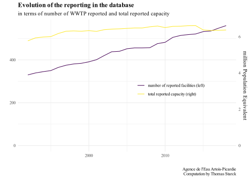
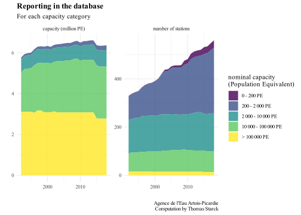
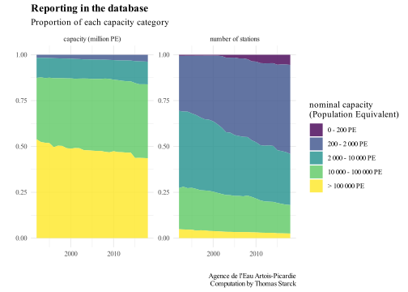
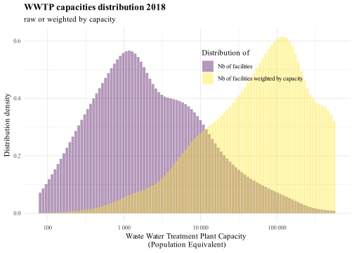
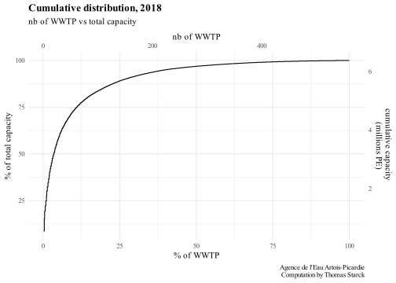
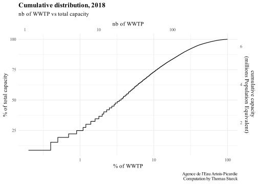
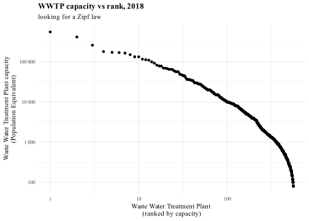
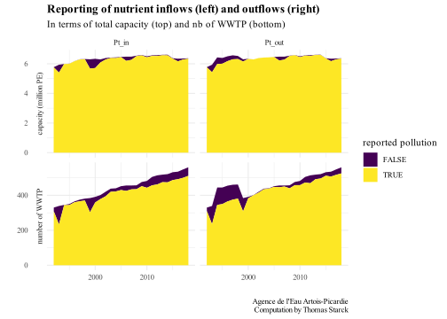

CAREFUL: for now, for Artois-Picardie basin, we do not have NGL outflow after 2008. We extrapolate at the basin scale from NO out and a constant ratio. We will update with better data in the future.
Data quality and description
Source and Description
Data source can be downloaded on Artois-Picardie Water Agency website, here (in Données sur les usages de l’eau -> Assainissement). This gives the data for 1992-2018
In the excel file, the table STATIONS D’EPURATION URBAINE describes the waste water treatment plant characteristics: capacity in population equivalent, N and P treatment, treatment type, nominal NK and P inflow….
The table PERFORMANCES also reports the plant capacity and adds incoming and outgoing reduced and oxidized nitrogen (NR and NO) flows and phosphorus (P) flows. It also reports DBO5, DCO and MES. Starting in 2008, NO is not reported anymore. DBO5 and DCO are only reported starting 2008.
Basin description
Information about the basin ca be found in the “Etat des lieux 2019” (status report).
There are 4.7 million inhabitants in the basin. 720 000 inhabitants are not connected to sewers and use Individual Autonomous Systems (IAS).
Information about the basin can also be found in the “Guide de l’eau” (water guide), here and here.
Loading the data
We load the PERFORMANCES and STATIONS D’EPURATION URBAINE sheets and merge them. We compute the yields for each WWTP.
Code
#main filefile_artois_picardie <- readxl::read_excel(paste(path_source, "stations_depuration_urbaine.xls", sep=""), sheet ="PERFORMANCES")#select and rename columns of interestN_P_artois_picardie <- file_artois_picardie %>%select(code_WWTP =`Code SANDRE station`,name_WWTP =`Nom de la station d'épuration urbaine`,Year =`Année d'activité`,capacity =`Capacité de la station d'épuration urbaine (en Eh)`,#MESMES_in_reported =`Assiette entrante en MeS (en kg/j)`,MES_out =`Assiette sortante en MeS (en kg/j)`,MES_removed =`Assiette enlevée en MeS (en kg/j)`,#DBO5DBO5_in_reported =`Assiette entrante en DBO5 (en kg/j)`,DBO5_out =`Assiette sortante en DBO5 (en kg/j)`,DBO5_removed =`Assiette enlevée en DBO5 (en kg/j)`,#DCODCO_in_reported =`Assiette entrante en DCO (en kg/j)`,DCO_out =`Assiette sortante en DCO (en kg/j)`,DCO_removed =`Assiette enlevée en DCO (en kg/j)`,#PtPt_in_reported =`Assiette entrante en P (en kg/j)`,Pt_out =`Assiette sortante en P (en kg/j)`,Pt_removed =`Assiette enlevée en P (en kg/j)`,#NTKNTK_in_reported =`Assiette entrante en NR (en kg/j)`,NTK_out =`Assiette sortante en NR (en kg/j)`,NTK_removed =`Assiette enlevée en NR (en kg/j)`,#NONO_in_reported =`Assiette entrante en NO (en kg/j)`,NO_out =`Assiette sortante en NO (en kg/j)`,NO_removed =`Assiette enlevée en NO (en kg/j)` )# Some reported flows are negative or null. We replace them with empty values.#PtN_P_artois_picardie$Pt_in_reported[N_P_artois_picardie$Pt_in_reported <=0] <-NAN_P_artois_picardie$Pt_out[N_P_artois_picardie$Pt_out <=0] <-NAN_P_artois_picardie$Pt_removed[N_P_artois_picardie$Pt_removed <=0] <-NA#DBO5N_P_artois_picardie$DBO5_in_reported[N_P_artois_picardie$DBO5_in_reported <=0] <-NAN_P_artois_picardie$DBO5_out[N_P_artois_picardie$DBO5_out <=0] <-NAN_P_artois_picardie$DBO5_removed[N_P_artois_picardie$DBO5_removed <=0] <-NA#DCON_P_artois_picardie$DCO_in_reported[N_P_artois_picardie$DCO_in_reported <=0] <-NAN_P_artois_picardie$DCO_out[N_P_artois_picardie$DCO_out <=0] <-NAN_P_artois_picardie$DCO_removed[N_P_artois_picardie$DCO_removed <=0] <-NA#MESN_P_artois_picardie$MES_in_reported[N_P_artois_picardie$MES_in_reported <=0] <-NAN_P_artois_picardie$MES_out[N_P_artois_picardie$MES_out <=0] <-NAN_P_artois_picardie$MES_removed[N_P_artois_picardie$MES_removed <=0] <-NA#NTKN_P_artois_picardie$NTK_in_reported[N_P_artois_picardie$NTK_in_reported <=0] <-NAN_P_artois_picardie$NTK_out[N_P_artois_picardie$NTK_out <=0] <-NAN_P_artois_picardie$NTK_removed[N_P_artois_picardie$NTK_removed <=0] <-NA#NON_P_artois_picardie$NO_in_reported[N_P_artois_picardie$NO_in_reported <=0] <-NAN_P_artois_picardie$NO_out[N_P_artois_picardie$NO_out <=0] <-NA#for NO we cannot apply it to removed flow car NO can be created through nitrification, thus a <0 "removed" flow is possible#estimation of NGL ; incoming nutrient flows ; nutrient yieldsN_P_artois_picardie <- N_P_artois_picardie %>%rowwise() %>%#rowise to be able to remove empty valuesmutate(#NGLNGL_in_reported = NTK_in_reported, # we approximate NGL_in by NTK_in#we compute NGL outflow only if both NTK and NO are reportedNGL_out =sum(NO_out + NTK_out, na.rm=!((is.na(NTK_out)|is.na(NO_out)))),#computed inflow (not possible to compute NO_in because NO output "created" during treatment)Pt_in = Pt_out + Pt_removed,NTK_in = NTK_out + NTK_removed,NGL_in = NTK_in,DCO_in = DCO_out + DCO_removed,DBO5_in = DBO5_out + DBO5_removed,MES_in = MES_out + MES_removed,#WWTP yieldPt_yield = (1-Pt_out/Pt_in)*100,NGL_yield = (1-NGL_out/NGL_in)*100,DCO_yield = (1-DCO_out/DCO_in)*100,DBO5_yield = (1-DBO5_out/DBO5_in)*100,MES_yield = (1-MES_out/MES_in)*100 )#Careful : starting 2008, NO is not reported anymore#Loading the infos related to WWTP characteristicsfile_WWTP <- readxl::read_excel(paste(path_source, "stations_depuration_urbaine.xls", sep=""), sheet ="STATIONS D'EPURATION URBAINE")WWTP <- file_WWTP %>%select(code_WWTP =`Code SANDRE station`,name_commune =`Nom commune`,treatment_type =`Type de station`,N_treatment =`Traitement azote ?`,P_treatment =`Traitement phosphore ?`,capacity_bis =`Capacité STEU (en EH)`,NTK_nominal_flow =`Flux nominal journalier en NK (en kg/j)`,P_nominal_flow =`Flux nominal journalier en P (en kg/j)`,INSEE_COM =`Code INSEE commune`,lat_WWTP =`Lambert93 X`,long_WWTP =`Lambert93 Y` )#merging the 2 filesN_P_artois_picardie <-left_join( N_P_artois_picardie, WWTP, by ="code_WWTP")#1991 is poorly reported, we do not keep it in the analysisN_P_artois_picardie <- N_P_artois_picardie %>%filter(Year>1991)#no double reporting (check that the file is empty) => okN_P_artois_picardie %>%select(Year, code_WWTP) %>%count(Year, code_WWTP) %>%filter(n !=1)# check there is no unreported capacity : OK (returns empty table)N_P_artois_picardie %>%filter(is.na(capacity)|capacity<=0)
We create the capacity categories in terms of population equivalent.
We compute the yields at the basin scale, and also by capacity categories.
Code
#have to do this in case inflow or outflow is more reported than the other one, which would create a bias if we took the ratio of the already aggregated flowsf_yield_basin <-function(basin, dataset, nutrientIN, nutrientOUT){ temp <- dataset %>%filter(is.na(!!as.symbol(nutrientIN))==F &is.na(!!as.symbol(nutrientOUT))==F ) %>%group_by(Year) %>%summarise(nutrient_in =sum(!!as.symbol(nutrientIN), na.rm=T),nutrient_out =sum(!!as.symbol(nutrientOUT), na.rm=T),yield =round((1-nutrient_out/nutrient_in)*100, digits =0) ) %>%select(-nutrient_in, -nutrient_out) basin <-left_join( basin, temp, by="Year" )return(basin)}f_yield_basin_PE <-function(basin_PE, dataset, nutrientIN, nutrientOUT){ temp <- dataset %>%filter(is.na(!!as.symbol(nutrientIN))==F &is.na(!!as.symbol(nutrientOUT))==F ) %>%group_by(Year, PE_bin) %>%summarise(nutrient_in =sum(!!as.symbol(nutrientIN), na.rm=T),nutrient_out =sum(!!as.symbol(nutrientOUT), na.rm=T),yield =round((1-nutrient_out/nutrient_in)*100, digits =0) ) %>%select(-nutrient_in, -nutrient_out) basin_PE <-left_join( basin_PE, temp, by=c("Year", "PE_bin") )return(basin_PE)}f_all_yields_basin <-function(basin, dataset){ basin <- basin %>%#NGL yieldf_yield_basin(dataset, "NGL_in", "NGL_out") %>%rename(NGL_yield = yield) %>%#Pt yieldf_yield_basin(dataset, "Pt_in", "Pt_out") %>%rename(Pt_yield = yield) %>%#DBO5 yieldf_yield_basin(dataset, "DBO5_in", "DBO5_out") %>%rename(DBO5_yield = yield) %>%#DCO yieldf_yield_basin(dataset, "DCO_in", "DCO_out") %>%rename(DCO_yield = yield) %>%#MES yieldf_yield_basin(dataset, "MES_in", "MES_out") %>%rename(MES_yield = yield) return(basin)}f_all_yields_basin_PE <-function(basin_PE, dataset){ basin_PE <- basin_PE %>%#NGL yieldf_yield_basin_PE(dataset, "NGL_in", "NGL_out") %>%rename(NGL_yield = yield) %>%#Pt yieldf_yield_basin_PE(dataset, "Pt_in", "Pt_out") %>%rename(Pt_yield = yield) %>%#DBO5 yieldf_yield_basin_PE(dataset, "DBO5_in", "DBO5_out") %>%rename(DBO5_yield = yield) %>%#DCO yieldf_yield_basin_PE(dataset, "DCO_in", "DCO_out") %>%rename(DCO_yield = yield) %>%#MES yieldf_yield_basin_PE(dataset, "MES_in", "MES_out") %>%rename(MES_yield = yield) return(basin_PE)}basin_N_P_artois_picardie <-f_all_yields_basin(basin_N_P_artois_picardie, N_P_artois_picardie)basin_PE_N_P_artois_picardie <-f_all_yields_basin_PE(basin_PE_N_P_artois_picardie, N_P_artois_picardie)
We create the years categories (every 5 years).
Code
#function to create years categoriesf_year_categories <-function(dataset){ dataset <- dataset %>%mutate(Year_category =case_when( Year %in%c(1991, 1992, 1993, 1994, 1995) ~"1991-1995", Year %in%c(1996, 1997, 1998, 1999, 2000) ~"1996-2000", Year %in%c(2001, 2002, 2003, 2004, 2005) ~"2001-2005", Year %in%c(2006, 2007, 2008, 2009, 2010) ~"2006-2010", Year %in%c(2011, 2012, 2013, 2014, 2015) ~"2011-2015", Year %in%c(2016, 2017, 2018, 2019, 2020) ~"2016-2020", ) )return(dataset)}N_P_artois_picardie <-f_year_categories(N_P_artois_picardie)basin_N_P_artois_picardie <-f_year_categories(basin_N_P_artois_picardie)basin_PE_N_P_artois_picardie <-f_year_categories(basin_PE_N_P_artois_picardie)
Understand the data
There is a reporting discontinuity in 2008. Before this date, DCO and DBO5 are not reported. On the contrary, starting 2008, NO is no more reported.
Moreover before 2008 the reported nutrient inflows do not match the relation Inflow = Outflow + Removed. We recomputed the inflows based on this relation, and obtained a consistent continuity for the transition in 2008, and after 2008. For the following we will thus use or computed quantity.
NGL is not reported, so we compute it. For the whole period, incoming NGL is approximated by incoming NTK (since NO is negligible for incoming flows). For outgoing NGL, we can compute NGL = NTK + NO only for before 2008 ; since NO is not reported after 2007 we cannot compute outgoing NGL this way after this date. The approximation used is detailed in the tab NGL out after 2007.
Code
f_graph_nutrient <-function(dataset, nutrient_in, nutrient_out, nutrient_removed, nutrient_in_computed, label){ p <-ggplot(dataset) +#nutrient outflowgeom_ribbon(aes( Year, ymin=0, ymax =!!as.symbol(nutrient_out), fill = nutrient_out ),alpha=.8 ) +#nutrient removedgeom_ribbon(aes( Year, ymin=!!as.symbol(nutrient_out), ymax =!!as.symbol(nutrient_out) +!!as.symbol(nutrient_removed), fill = nutrient_removed ),alpha=.8 ) +#nutrient inflow computedgeom_line(aes( Year, !!as.symbol(nutrient_in), linetype="inflow reported" ) ) +#nutrient inflow reportedgeom_line(aes( Year, !!as.symbol(nutrient_in_computed), linetype="inflow computed" ) ) +ylim(0, NA) +theme(legend.title =element_blank() ) +labs(x="", y=paste("kt of", label) , title =paste("Reported", label, "flows in Artois-Picardie WWTPs") ,subtitle ="reported, not necessarily actual ; here before data cleaning", caption = Source )return(p)}
As we said, before 2008, incoming flows are unreliable and overestimated. But for NO, contrary to the other flows, we cannot compute NO in = NO out + NO removed, because NO is “created” during the treatment through nitrification.
inflow
For NGL, which is equal to NO + NTK, we can see that incoming NO is negligible compared to NTK, so we approximate incoming NGL by incoming NTK.
We can compute NGL out = NTK out + NO out before 2008, when NO is reported. For 2000-2008 the relations holds true at the basin scale. Before that, stations sometimes only report NTK out or NO out, and in that case we do not compute NGL out, explaining the apparent discrepancy.
After that date, it is not possible to assess NGL (contrary to incoming flows, here NO is not negligible).
Code
#we remove th 0 values of NGL out starting 2008basin_N_P_artois_picardie$NGL_out[basin_N_P_artois_picardie$Year>2007] <-NAN_P_artois_picardie$NGL_out[N_P_artois_picardie$Year>2007] <-NA# basin_N_P_artois_picardie$NGL_out[basin_N_P_artois_picardie$Year==1991] <- NA# N_P_artois_picardie$NGL_out[N_P_artois_picardie$Year==1991] <- NA#idem for NGL yieldbasin_N_P_artois_picardie$NGL_yield[basin_N_P_artois_picardie$Year>2007] <-NAN_P_artois_picardie$NGL_yield[N_P_artois_picardie$Year>2007] <-NA
We try to extrapolate outgoing NO after 2007 at the basin scale, by looking for a constant ratio on the period 1990-2007. NO out / NGL_in roughly meets this criteria, even though the NGL yield drastically changed over the period (see Yields section).
The ratio seems to begin to be roughly consistent over the different capacities starting 2004. We use this ratio averaged over 2004-2007 to compute outgoing NO for 2008-2020, and thus outgoing NGL as a first approximation.
With this we compute, at the basin scale, the NGL yield starting 2008 as well as the nutrient ratios involving NGL. We will imrove this in the future.
Code
#compute NO/NGL out at the basin scaletemp <- N_P_artois_picardie %>%filter( Year<2008,is.na(NO_out)==F &is.na(NGL_in)==F #only when both are reported ) %>%group_by(Year, PE_bin) %>%summarise(NO_out =sum(NO_out, na.rm=T),NGL_in =sum(NGL_in, na.rm=T),ratio = NO_out/NGL_in ) ggplot(temp) +geom_line(aes(Year, ratio, color = PE_bin)) +labs(x="", y="",title ="Ratio at the basin scale",subtitle ="Outgoing NO / Incoming NGL",caption = Source,color ="WWTP capacity" ) +ylim(0, 0.2)
#file for graphtemp <- N_P_artois_picardie %>%group_by(Year) %>%summarise(capacity =sum(capacity, na.rm = T)/10^6, #capacity in million PEnb_WWTP =n() )year_min <-min(temp$Year)year_max <-max(temp$Year)n_min <-first(temp$nb_WWTP)n_max <-last(temp$nb_WWTP)capacity_min <-round(first(temp$capacity), digits=1)capacity_max <-round(last(temp$capacity), digits=1)
Even though the number of listed plants in the data base increases from 330 to 560 (a 70% increase) between 1992 and 2018, the total capacity only increases by 10% from 5.8 to 6.4 million Population Equivalent.
This highlights the fact that unreported plants are mostly small and that the plant size distribution is highly skewed, which is discussed in the following 3 tabs.
Code
coef <-max(temp$capacity)/max(temp$nb_WWTP)ggplot(temp) +geom_line(aes( Year, nb_WWTP, color ="number of reported facilities (left)" ) ) +geom_line(aes( Year, capacity/coef, color ="total reported capacity (right)" ) ) +scale_y_continuous(limits =c(0, NA),sec.axis =sec_axis(trans=~.*coef, name="million Population Equivalent" ) ) +labs(title ="Evolution of the reporting in the database",subtitle ="in terms of number of WWTP reported and total reported capacity",y="", x="", color="", caption =Source ) +theme(legend.position =c(0.7, 0.5) )

Large categories
About half of the total capacity is from WWTP larger than 100 000 population equivalent. About 80-90% is due to WWTP larger than 10 000 population equivalent.
Code
temp <- N_P_artois_picardie %>%filter(is.na(capacity)==F) %>%select(Year, capacity, PE_bin) %>%group_by(Year, PE_bin) %>%summarise(`capacity (million PE)`=sum(capacity)/10^6,`number of stations`=n() ) %>%gather(key=capacity_or_n, value = value, `capacity (million PE)`, `number of stations`)
Absolute
Code
ggplot(temp) +geom_area(aes(Year, value, fill=PE_bin), alpha=.8) +facet_wrap(vars(capacity_or_n), scales="free") +labs(title="Reporting in the database",subtitle ="For each capacity category",x="", y="", fill="nominal capacity \n(Population Equivalent)",caption = Source )

Relative
Code
ggplot(temp) +geom_area(aes(Year, value, fill=PE_bin), position ="fill", alpha=.8) +facet_wrap(vars(capacity_or_n), scales="free") +labs(title="Reporting in the database",subtitle ="Proportion of each capacity category",x="", y="", fill="nominal capacity \n(Population Equivalent)",caption = Source )

Histogram
Code
temp <- N_P_artois_picardie %>%filter(Year==Year_analysis)ggplot(temp) +geom_histogram(aes( capacity, fill ="Nb of facilities" ), n=100, alpha=.4, stat="density" ) +geom_histogram(aes( capacity, weight = capacity, fill="Nb of facilities weighted by capacity" ), n=100, alpha=.4, stat="density" ) +theme(legend.position =c(0.7,0.8), ) +labs(x="Waste Water Treatment Plant Capacity \n(Population Equivalent)",y="Distribution density",fill="Distribution of",title =paste("WWTP capacities distribution", as.character(Year_analysis)),subtitle ="raw or weighted by capacity" ) +scale_x_log10(labels = scales::label_number(drop0trailing =TRUE) )

Cumulative distribution
About 1% of the WWTP represent 25% of the total capacity ; 4% represent 50% of the capacity ; 10% represent 75%
ggplot(temp) +geom_step(aes(x = percent_rank, y = percent_cumulative_capacity ) ) +labs(title =paste("Cumulative distribution,", Year_analysis),subtitle="nb of WWTP vs total capacity",x="% of WWTP", y="% of total capacity",caption = Source ) +scale_x_continuous(sec.axis =sec_axis(trans=~.*coef, name="nb of WWTP",labels = scales::label_number(drop0trailing =TRUE) ) ) +scale_y_continuous(sec.axis =sec_axis(trans=~.*coef2, name="cumulative capacity \n(millions PE)" ) ) +theme(legend.position ="none")

Nb of WWTPs vs Capacity (log scale)
Code
ggplot(temp) +geom_step(aes(x = percent_rank, y = percent_cumulative_capacity ) ) +labs(title =paste("Cumulative distribution,", Year_analysis),subtitle="nb of WWTP vs total capacity",x="% of WWTP", y="% of total capacity",caption = Source ) +scale_x_log10(labels = scales::label_number(drop0trailing =TRUE),sec.axis =sec_axis(trans=~.*coef, name="nb of WWTP",labels = scales::label_number(drop0trailing =TRUE) ) ) +scale_y_continuous(sec.axis =sec_axis(trans=~.*coef2, name="cumulative capacity \n(millions Population Equivalent)" ) ) +theme(legend.position ="none")

Zipf law
Code
ggplot(temp) +geom_point(aes(x = rank_STEU, y = capacity ) ) +labs(title =paste("WWTP capacity vs rank,", Year_analysis),subtitle ="looking for a Zipf law",x="Waste Water Treatment Plant \n(ranked by capacity)",y=" Waste Water Treatment Plant capacity\n(Population Equivalent)" ) +scale_x_log10(labels = scales::label_number(drop0trailing =TRUE) ) +scale_y_log10(labels = scales::label_number(drop0trailing =TRUE) )

Pollution flows
Data Quality : reporting rates
Navigate through tabs below to see details for each pollutant. For each pollutant, we present reporting for incoming (left) and outgoing (right) pollution, in terms of number of WWTP reporting the data (bottom) or in terms of installed capacity (top).
Pollution reporting is excellent for NTK, Pt, MES. Starting 2008, DBO5 and DCO are also reported very well. By construction incoming NGL is equal to incoming NTK, so it is equally reported. See how is constructed NGL in the first paragraph #Data quality and description*.
Besides reporting of specific pollutants, one must keep in mind that the number of reported WWTP increases over time, which might create a bias in total quantities reported. However, most of the newly reported facilities are small one, as shown by the rather constant capacity starting 2000.
Code
#function for plots : to be finishedf_graph_reporting_nutrients <-function(pollution_in, pollution_out){ temp <- N_P_artois_picardie %>%select( Year, capacity, !!as.symbol(pollution_in), !!as.symbol(pollution_out) ) %>%mutate(nutrient_in =is.na(!!as.symbol(pollution_in))==F,nutrient_out =is.na(!!as.symbol(pollution_out))==F ) %>%gather(key=in_out_flow, value =`reported pollution`, nutrient_in, nutrient_out ) %>%group_by( Year, in_out_flow, `reported pollution` ) %>%summarise(`number of WWTP`=n(), `capacity (million PE)`=sum(capacity, na.rm=T)/10^6 ) %>%gather(key=n_or_capacity, value = value, `number of WWTP`, `capacity (million PE)` ) %>%#renaming labelsmutate(in_out_flow =case_when( in_out_flow =="nutrient_in"~ pollution_in, in_out_flow =="nutrient_out"~ pollution_out, ) ) g <-ggplot(temp) +geom_area(aes(Year, value, fill=`reported pollution`)) +facet_grid( n_or_capacity~in_out_flow, scales="free_y", switch ="y") +labs(y="", x="",title ="Reporting of nutrient inflows (left) and outflows (right)",subtitle ="In terms of total capacity (top) and nb of WWTP (bottom)",caption = Source ) return(g)}
Pt
Code
f_graph_reporting_nutrients("Pt_in", "Pt_out")

NTK
Code
f_graph_reporting_nutrients("NTK_in", "NTK_out")
NGL
Code
f_graph_reporting_nutrients("NGL_in", "NGL_out") +labs(subtitle ="after 2007, NGL out is actually extrpolated from NGL in and NTK out!")
The same as in Data cleaning -> Outliers: first visualization because we did not have to correct major outliers in the Artois-Picardie basin.
Real flow extrapolation
We extrapolate the flows at the basin scale for the plants not reporting them. For that, we use a coefficient proportionate to the unreported capacity of the given nutrient flow (see data quality tab).
Coefficient calculation
We compute in terms of installed capacity the reported and unreported flows for NGL, Pt, DBO5, DCO and MES. We do this for each year and for each capacity category.
Code
#create file of reported temp <- N_P_artois_picardie %>%select( Year, PE_bin, capacity, Pt_in, Pt_out, NGL_in, NGL_out, DBO5_in, DBO5_out, DCO_in, DCO_out, MES_in, MES_out ) %>%#spots unreported values for each nutrient flowmutate(across(c(Pt_in, Pt_out, NGL_in, NGL_out, DBO5_in, DBO5_out, DCO_in, DCO_out, MES_in, MES_out),~is.na(.x)==F ) ) %>%#gather to be able to then group by flow and count capacitygather(key=nutrient_flow, value = reported_pollution, Pt_in, Pt_out, NGL_in, NGL_out, DBO5_in, DBO5_out, DCO_in, DCO_out, MES_in, MES_out ) %>%#count reported capacity and unreported capacity for each (Year, capacity category, nutrient flow)group_by( Year, PE_bin, nutrient_flow, reported_pollution ) %>%summarise(capacity =sum(capacity, na.rm=T)/10^6 ) %>%#creates reported/unreported names for each nutrient flow and spreads into columnsmutate(nutrient_flow =case_when( reported_pollution == T ~paste0(nutrient_flow, "_reported"), reported_pollution == F ~paste0(nutrient_flow, "_unreported") ) ) %>%select(-reported_pollution) %>%spread(nutrient_flow, capacity)# NA values replaced by 0 for futur coeff computationtemp[is.na(temp)] <-0
From this we compute proportionate coefficient to extrapolate real flows.
We add these adjusted flows to the main files reporting flows at the basin scale
Code
#adding adjusted flows to the basin x capacity filesbasin_PE_N_P_artois_picardie <-left_join( basin_PE_N_P_artois_picardie, temp2, by=c("Year", "PE_bin"))#aggregating adjusted flows at the basin scale without the capacity categoriestemp <- temp2 %>%select(-PE_bin) %>%group_by(Year) %>%summarise_all(~signif(sum(.x), 3))#adding adjusted flows to the basin filesbasin_N_P_artois_picardie <-left_join( basin_N_P_artois_picardie, temp, by="Year")
We plot the comparison reported / adjusted in the following graphs. For the Artois-Picardie basin, the difference is very marginal.
We save the file for our analysis at the national scale combining all different basins. We do not save data for individual WWTP NGL yield and NO and NGL outflows, since they are approximations valid only at the basin level.